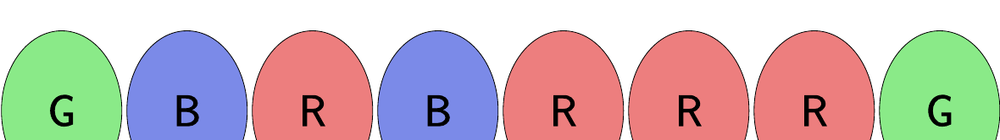

47th ICPC World Championship · Problem G
Mei’s parents have spent the last year remodeling their house, but their lighting system is quite complex! Each room in the house has an LED light, which can be set to red, green, or blue, as seen in Figure G.1.

Throughout the house are various buttons which are each connected to one or more lights. When a button is pressed, any red lights connected to that button become green, any green lights connected to that button become blue, and any blue lights connected to that button become red. Each button can be pressed multiple times. Because the house was built prior to the invention of crossbar wiring, each light is controlled by at most two buttons.
Mei’s favorite color is red, so she wants to turn all of the lights red. Her parents, fearing the buttons will wear out, have asked her to minimize the total number of button presses.
The first line of input contains two positive integers l and b, where l (1 ≤ l ≤ 2 · 105) is the number of lights and b (0 ≤ b ≤ 2 · l) is the number of buttons. The second line of input is a string of l characters, all either R, G, or B, where the ith character is the initial color of the ith light. The next b lines describe the buttons. Each of these lines begins with an integer k (1 ≤ k ≤ l), the number of lights controlled by this button. Then k distinct integers follow, the lights controlled by this button. The lights are indexed from 1 to l, inclusive. Each light appears at most twice across all buttons.
Output the minimum number of button presses Mei needs to turn all the lights red. If it is impossible for Mei to turn all of the lights red, output impossible.
8 6 GBRBRRRG 2 1 4 1 2 4 4 5 6 7 3 5 6 7 1 8 1 8
8
4 3 RGBR 2 1 2 2 2 3 2 3 4
impossible
4 4 GBRG 2 1 2 2 2 3 2 3 4 1 4
6
3 3 RGB 1 1 1 2 1 3
3